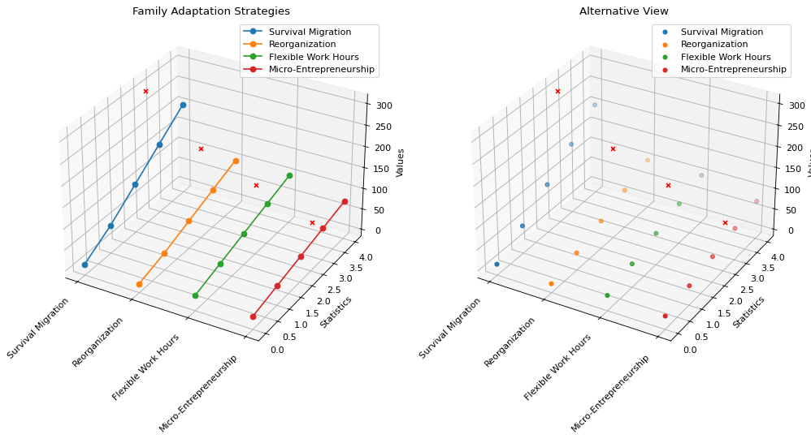

Total failure cases of factor "Count": 1
| ID | Chart | Question | Additional Information | Pitfalls | Most relevant pitfall |
223.png |
 |
Which categories have an Outlier value less than 200?
|
{
"Ground Truth": "Reorganization, Flexible Work Hours, and Micro-Entrepreneurship",
"Prediction": "Micro-Entrepreneurship"
}
|
### Potential Pitfalls in the Chart Image: 1. **Overlapping Data Points**: In both subplots, the data points (including outliers) might overlap or be close enough to each other that it becomes difficult to distinguish individual values visually. 2. **Outlier Representation**: The outliers are represented by red 'x' markers, but their specific values are not directly labeled on the plot. This makes it challenging to determine their exact numerical values solely from the visual representation. 3. **3D Perspective Issues**: The 3D perspective can distort the perception of distances and relative positions of the data points. This distortion might make it seem like some outliers are closer or further away from certain thresholds than they actually are. 4. **Color Coding**: While color coding helps differentiate categories, the colors might not be distinct enough for all viewers, especially those with color vision deficiencies. 5. **Lack of Numerical Labels for Outliers**: There are no numerical labels next to the outlier markers, which forces viewers to infer the values based on their position relative to the axes, leading to potential inaccuracies. ### Most Relevant Pitfall: The most significant issue contributing to the model's error is the **lack of numerical labels for outliers**. Without these labels, it is difficult to accurately determine which outliers have values less than 200, leading to potential misinterpretations. <most_relevant>Lack of numerical labels for outliers</most_relevant> |
Lack of numerical labels for outliers |